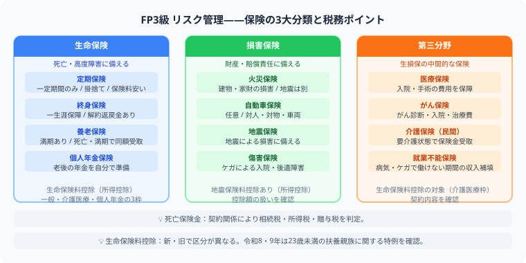

FP3級 リスク管理・保険の勉強法
控除額を例題で計算してみる
この記事でわかること（5秒まとめ）
- 保険は「生命保険（人）」「損害保険（モノ）」「第三分野（病気・介護）」の3箱で整理する
- 生命保険料控除は新制度（2012年〜）と旧制度で上限額が違う
- 新制度の合計上限は所得税12万円・住民税7万円
- 死亡保険金の税金は契約者・被保険者・受取人の組み合わせで決まる
大谷 一輝 より
こんにちは、大谷です！
リスク管理の分野は保険商品の名前が色々出てきて最初は覚える気が失せるんですが、実は「保険料控除の計算」は数字さえ押さえれば得点源にしやすい分野です。今日は控除額を実際に計算しながら整理していきます！
また、記事の末尾のほうにある【いいねボタン】をポチッと押してもらえると、めちゃくちゃ嬉しいです！
受験生
生命保険料控除、「新制度」と「旧制度」があるって聞いたんですが、何が違うんですか？
大谷（簿記1級勉強中）
契約した時期で分かれます。2012年1月1日以降の契約が「新制度」で、一般・介護医療・個人年金の3区分、各上限は所得税4万円・住民税2.8万円。2011年12月31日以前の契約が「旧制度」で、一般・個人年金の2区分、各上限は所得税5万円・住民税3.5万円です。区分が1つ増えた代わりに、1区分あたりの上限は下がっているんです。
受験生
じゃあ実際に年間8万円払ったら、控除額はいくらになるんですか？
大谷（簿記1級勉強中）
新制度の一般生命保険料として年間8万円払った場合、所得税の控除額は上限の4万円になります。「払った額＝控除額」ではなく、上限でカットされる点がポイントです。この後、実際の計算式も見ていきましょう。
❓ 保険の3分類——「人」「モノ」「病気・介護」
保険は「人の死亡・生存」「モノの損害」「病気・介護」の3箱に分けると整理しやすくなります。税務（保険料控除・保険金の課税）もセットで覚えましょう。

| 分類 | 代表例 | ポイント |
|---|---|---|
| 生命保険 | 定期保険、終身保険、養老保険 | 人の死亡・生存に備える |
| 損害保険 | 火災保険、自動車保険、地震保険 | 事故や災害による損害に備える |
| 第三分野 | 医療保険、がん保険、介護保険 | 病気・ケガ・介護に備える |
📝 生命保険料控除を例題で計算する
例題
2020年に契約した（＝新制度が適用される）一般生命保険に、年間8万円の保険料を払っている場合の所得税の控除額は？
新制度の一般生命保険料控除の上限：所得税4万円（年間払込額が8万円超で上限に達する）
→年間8万円払っていれば、控除額は上限の4万円になる
→年間8万円払っていれば、控除額は上限の4万円になる
| 区分 | 新制度（2012年1月1日以降） | 旧制度（2011年12月31日以前） |
|---|---|---|
| 区分 | 一般・介護医療・個人年金の3区分 | 一般・個人年金の2区分 |
| 各区分の上限（所得税） | 4万円 | 5万円 |
| 各区分の上限（住民税） | 2.8万円 | 3.5万円 |
| 合計上限（所得税） | 12万円 | 10万円 |
| 合計上限（住民税） | 7万円 | 7万円 |
覚え方：新制度は区分が1つ増えた分、1区分あたりの上限は下がっていますが、区分が増えたことで合計上限（所得税12万円）は旧制度（10万円）より高くなっています。
🏠 地震保険料控除も計算してみる
例題
年間の地震保険料が3万円の場合、所得税の地震保険料控除額は？
地震保険料控除は支払った保険料の全額が対象（上限は所得税5万円）
→年間3万円は上限5万円以内なので、控除額はそのまま3万円
→年間3万円は上限5万円以内なので、控除額はそのまま3万円
地震保険は単独では加入できず、必ず火災保険に付帯して契約します。控除の考え方は生命保険料控除よりシンプルで、支払額がそのまま控除額になる（上限内であれば）点が特徴です。
🔍 死亡保険金にかかる税金の見分け方
死亡保険金の税金は、契約者（保険料を払う人）・被保険者（保険の対象者）・受取人の組み合わせで決まります。
| 契約者 | 被保険者 | 受取人 | 税金の種類 |
|---|---|---|---|
| 夫 | 夫 | 妻 | 相続税（契約者＝被保険者） |
| 夫 | 妻 | 夫 | 所得税・住民税（契約者＝受取人） |
| 夫 | 妻 | 子 | 贈与税（契約者・被保険者・受取人が全員別） |
よくあるミス：「誰が亡くなったか」だけで判断してしまうミスが多いです。必ず契約者（お金を出した人）・被保険者（亡くなった人）・受取人（お金をもらう人）の3人を確認しましょう。
📋 まとめ：リスク管理・保険 早見表
3分類生命保険（人）・損害保険（モノ）・第三分野（病気・介護）
新制度の合計上限所得税12万円・住民税7万円
旧制度の合計上限所得税10万円・住民税7万円
地震保険料控除全額控除、上限は所得税5万円
死亡保険金の税金契約者・被保険者・受取人の組み合わせで決まる